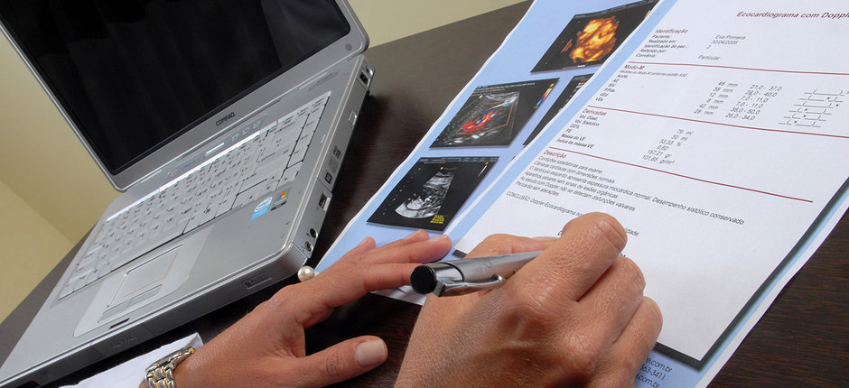

Laudos estruturados: Tranqüilidade e segurança para você e seu paciente.
No Scriba os lados são estruturados como check-lists, segundo o protocolo de execução de cada exame. É mais segurança para você e seus pacientes.
O layoute é facilmente personalizável, para você poder se diferenciar no mercado. Afinal a apresentação de seu laudo é a impressão que fica. Tanto para seus pacientes como para os colegas que solicitam seus exames.
Você poderá fazer como os nossos clientes: um clique e pronto! O Scriba corta o caminho para todas as rotinas mais repetitivas, sem sacrificar a segurança e a qualidade de conteúdo.
Facilitando a vida do médico, com laudos estruturados para cada especialidade.